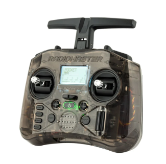
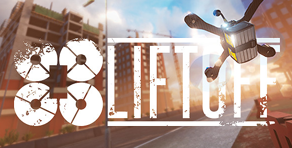
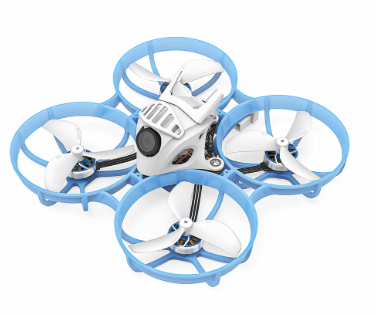
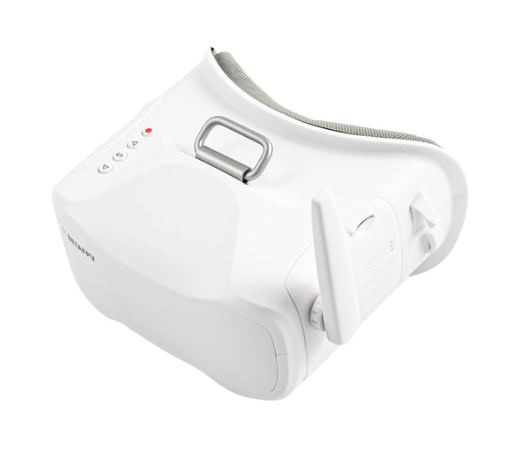
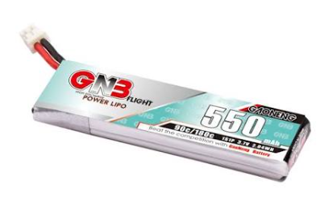
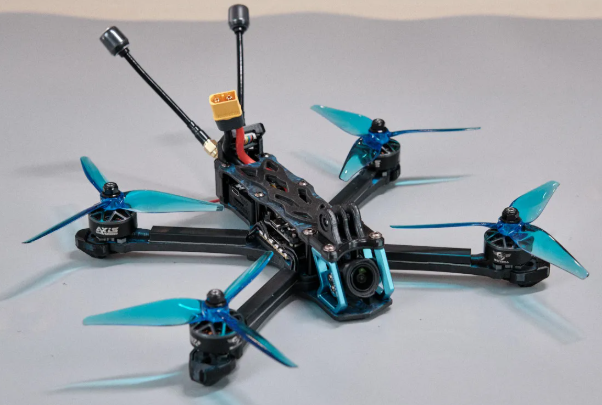

Getting into FPV can be expensive, and it’s easy to buy the wrong thing. Here is what I’d recommend to someone just starting out, listed in roughly the order you should buy it. The idea is to start small and cheap, learn to fly, and only then move up to a full-size quad.
1. RadioMaster Pocket
Brand: RadioMaster · Category: Radio controller

A compact ExpressLRS radio that runs EdgeTX. Buy this first: it works as a USB controller for every simulator, and it’s the one piece of gear you’ll keep using for years, no matter which drones you end up flying.2. Liftoff simulator
Category: Simulator

A drone simulator on Steam. Plug your radio in over USB and practice here first. A sim costs less than one set of replacement parts, and you can crash as many times as you want.3. BETAFPV Meteor75 Pro
Brand: BETAFPV · Category: Tiny whoop

A tiny drone with prop guards that you can fly indoors. It bounces off walls and furniture instead of breaking, which makes it perfect for your first real flights.4. Analog box goggles
Category: Goggles

Cheap goggles with a single big screen inside. They’re a good way to start with analog video before spending a lot of money on a digital system.5. 1S LiPo batteries and charger
Category: Power

Tiny whoops only fly for about 3–4 minutes per pack, so get at least six batteries and a charger that can charge several at once.6. 5-inch freestyle quad
Category: Drone

Once you’re comfortable in acro mode, build or buy a 5-inch quad for flying outdoors. See Building a quad for the parts that go into one.Just wait for the crash...
Tips before you buy
- Pick one radio link (ExpressLRS is the most popular) and buy receivers that match it.
- Pick one video system. Analog, DJI, Walksnail, and HDZero don’t work with each other.
- Budget for spare props. You will break a lot of them.